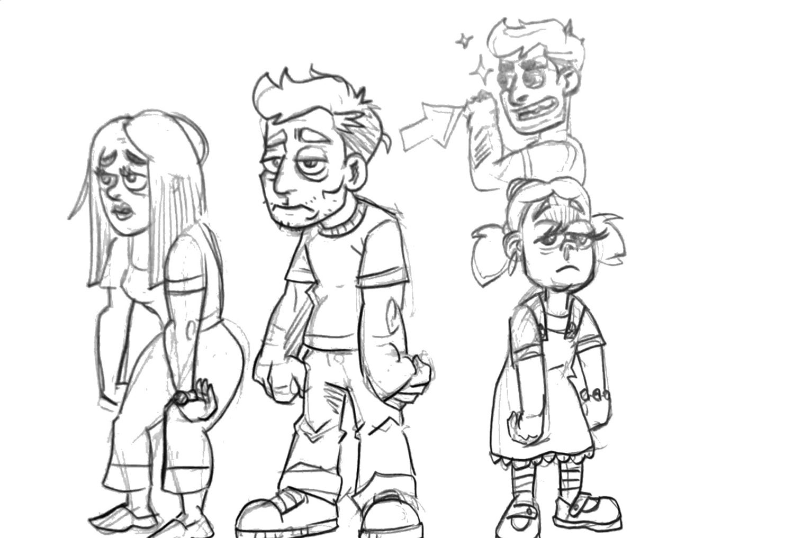
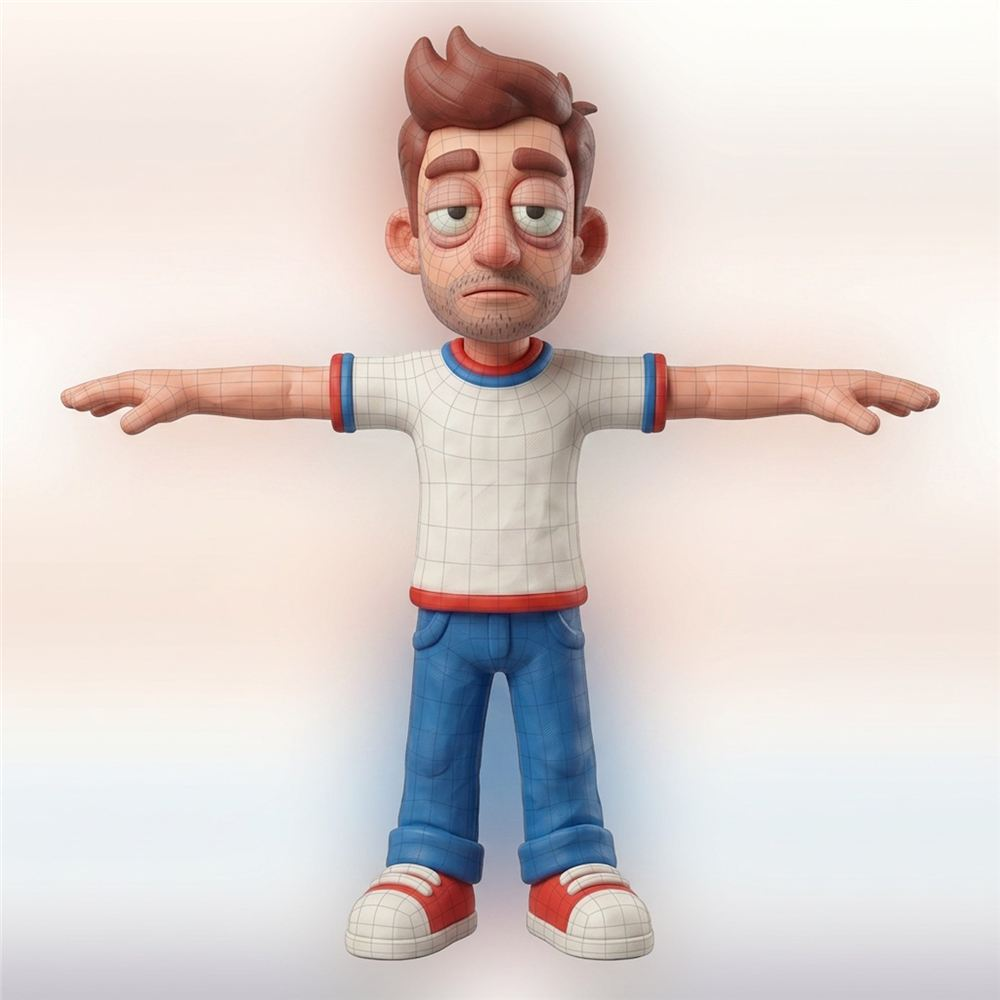
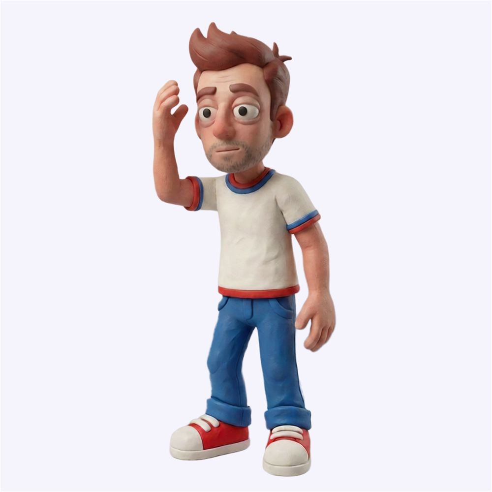
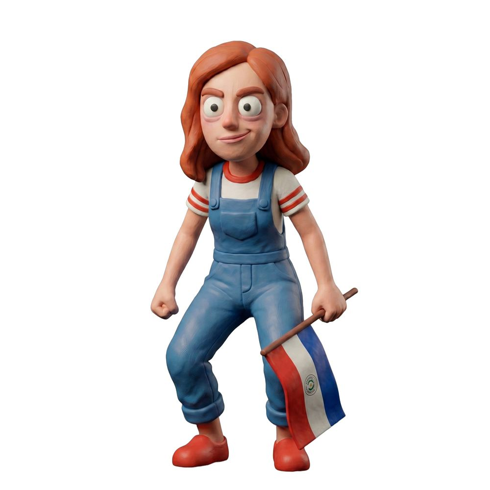
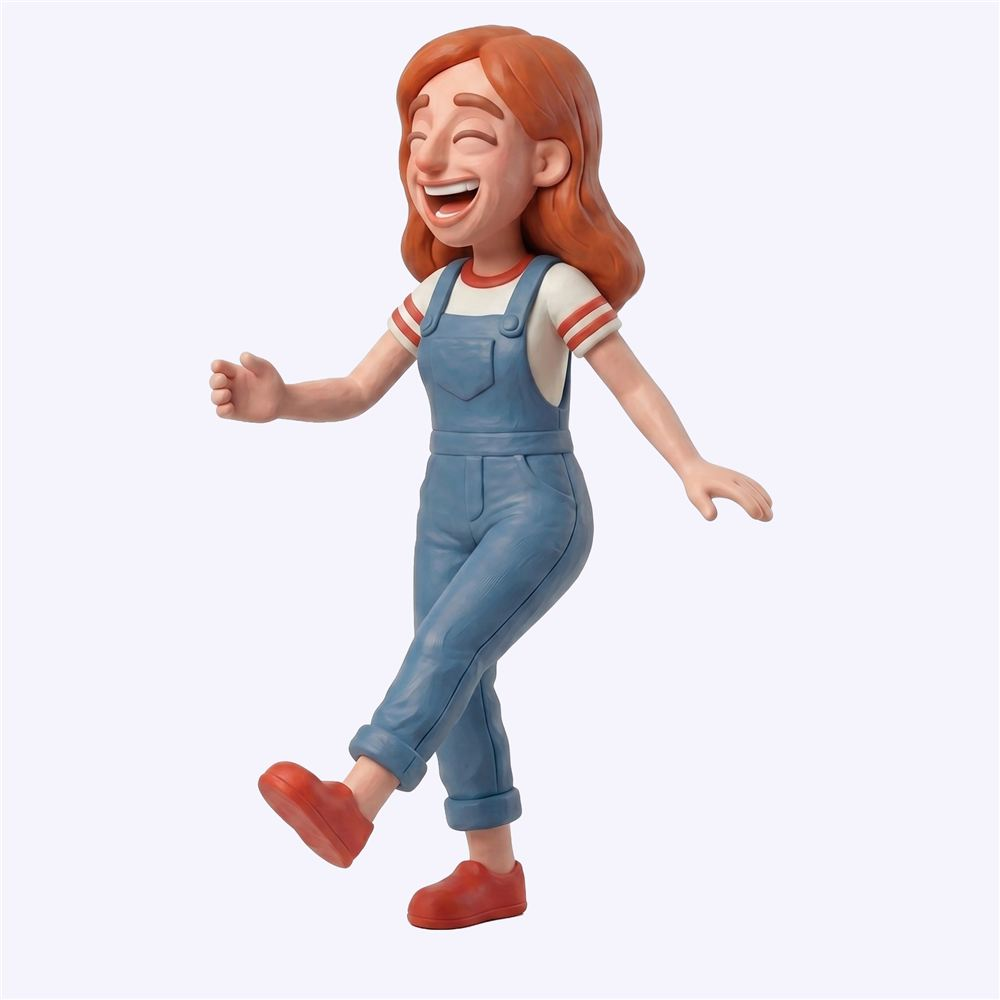
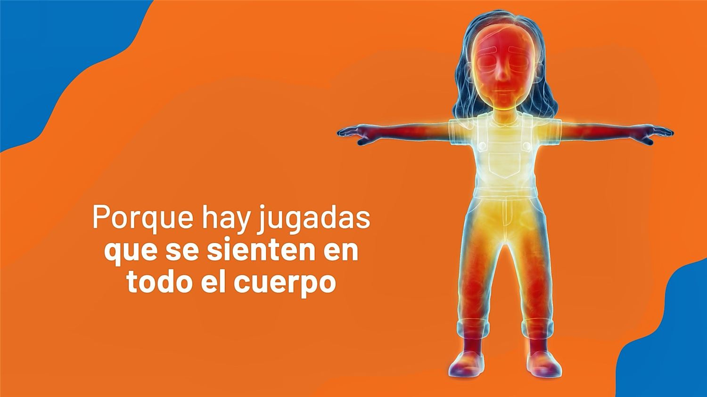
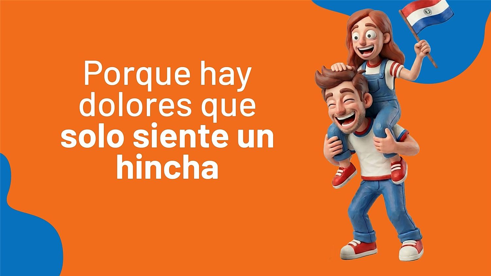
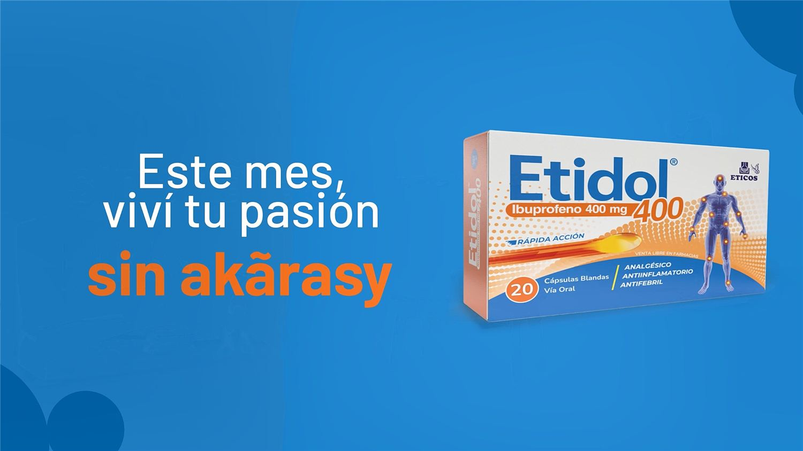
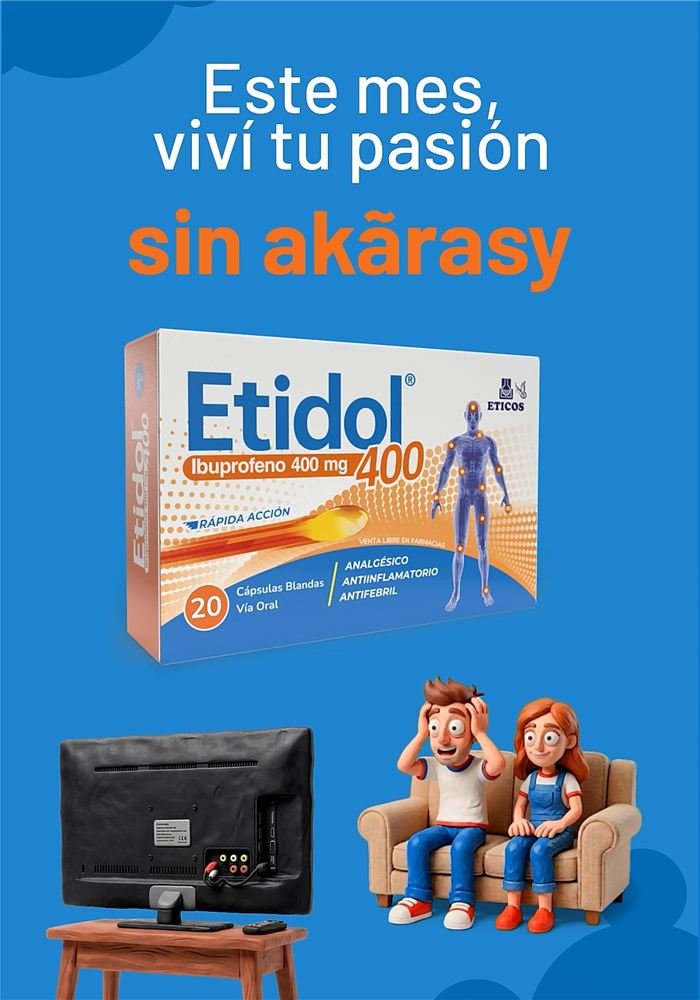

Motion · Campaña 360° · 2026
Dolores
del hincha
Los dolores del fútbol, convertidos en dos personajes de plastilina para el Mundial 2026.
Mi contribución
Dibujé a Sufrino y Dolores a mano, los llevé al estilo plastilina con Flow y ChatGPT, armé el storyboard del spot y animé en After Effects el spot, las viñetas, los zócalos y las pantallas de vía pública.
Desafío
Hablarle al hincha sin ser sponsor oficial
Etidol no podía usar logos, escudos, camisetas ni imágenes del torneo o de la selección. Tenía que entrar al territorio emocional del Mundial con un universo propio.
Idea
Cada dolor del fútbol, un personaje
Sufrino y Dolores sufren, se ponen nerviosos y festejan cada partido; Etidol aparece como el alivio. La plastilina dio calidez y esquivó la imagen oficial del torneo.
Proceso
Del boceto a la plastilina
- Bocetos a mano de varios hinchas; de ahí salen Sufrino y Dolores.
- Desarrollo con IA (Flow y ChatGPT) iterando proporciones y expresiones.
- Hoja de modelo y T-pose para sostener al personaje en todas las piezas.
- Biblioteca de expresiones y animación en After Effects.





Ejecución
En pantalla y en la calle
Spot de TV con viñetas, zócalos y placa de apoyo; vallado y pantallas de vía pública en formato vertical, horizontal y panorámico; banners animados, carruseles y stories. Todas las piezas se publicaron durante el Mundial.




Créditos
- Cliente
- Etidol · Eticos
- Agencia
- Periferia Comunicación
- Idea inicial y KV
- Abrahán Zacarías (también apoyo en diseño)
- Redacción y creatividad
- Abigail Silva, Paula Paredes
- Nombres de los personajes
- Equipo creativo de Periferia
- Dirección visual, personajes, dirección de IA, storyboard, animación y adaptaciones
- Kevin Mancuello
- Herramientas
- After Effects, Illustrator, Photoshop, Google Flow, ChatGPT